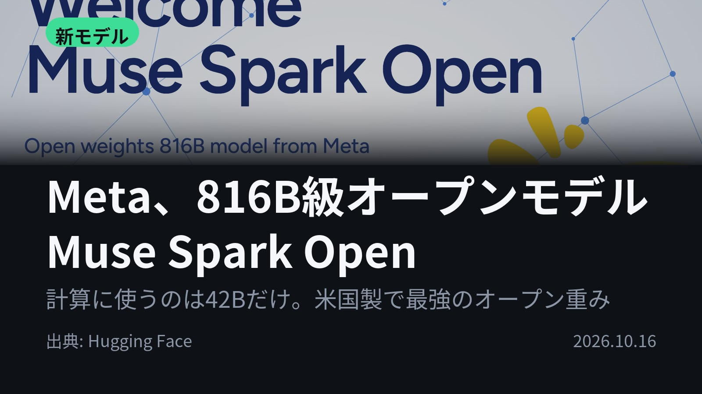
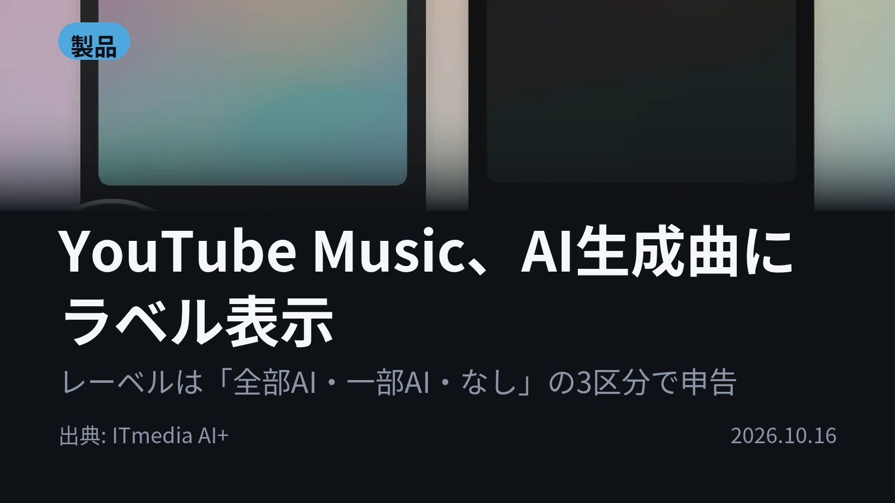
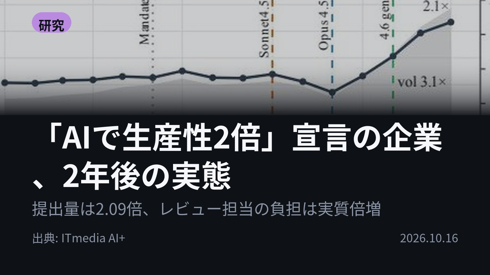
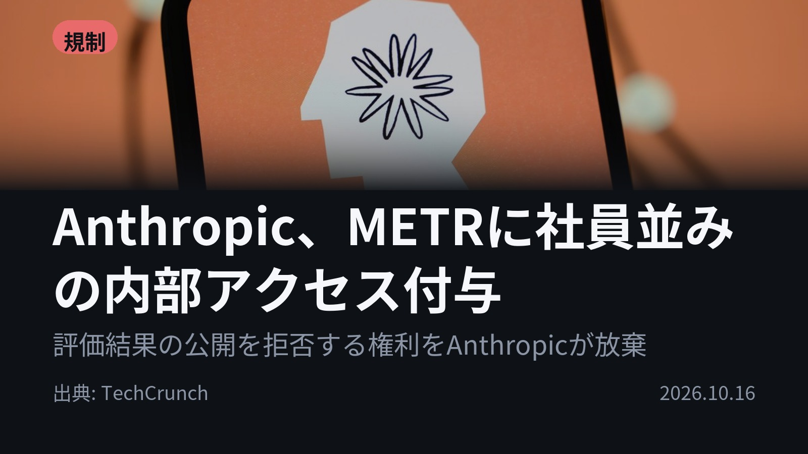
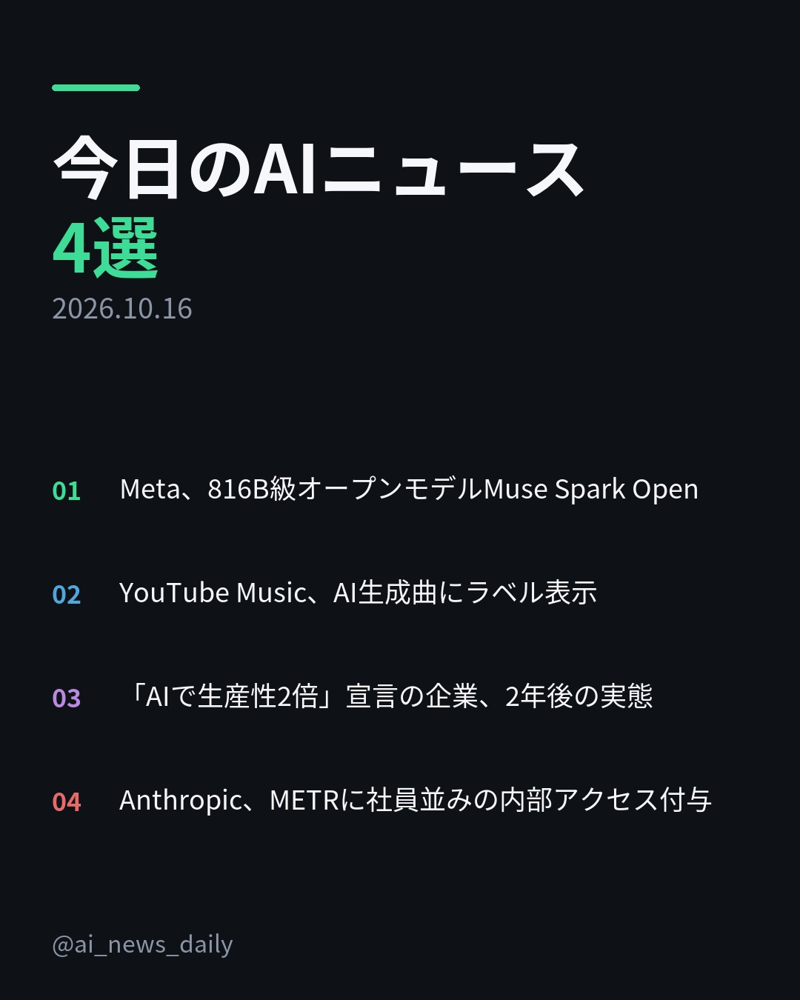
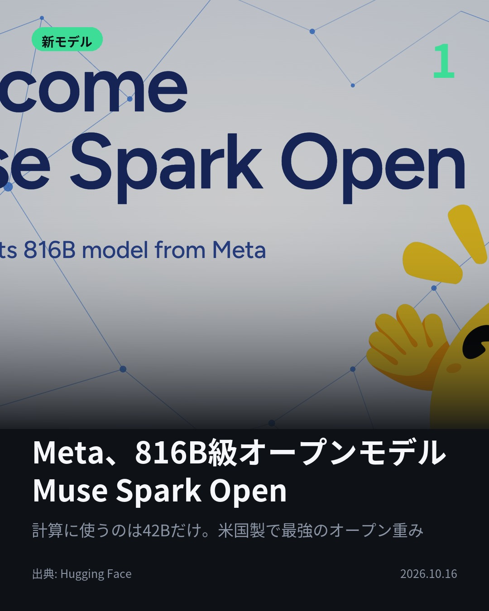
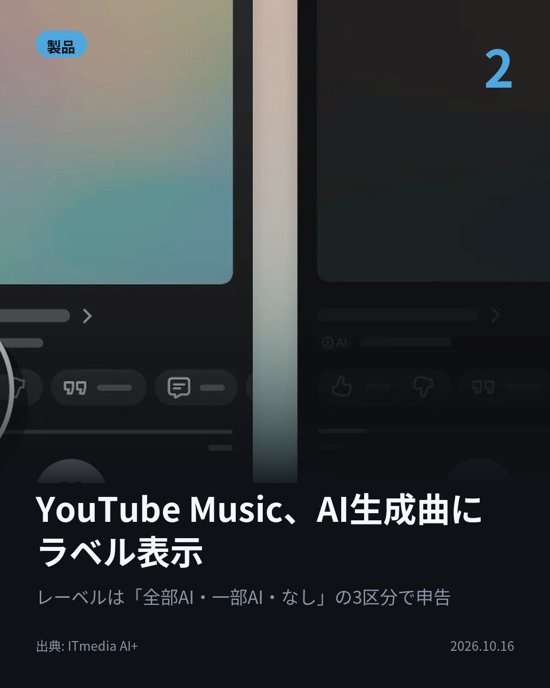
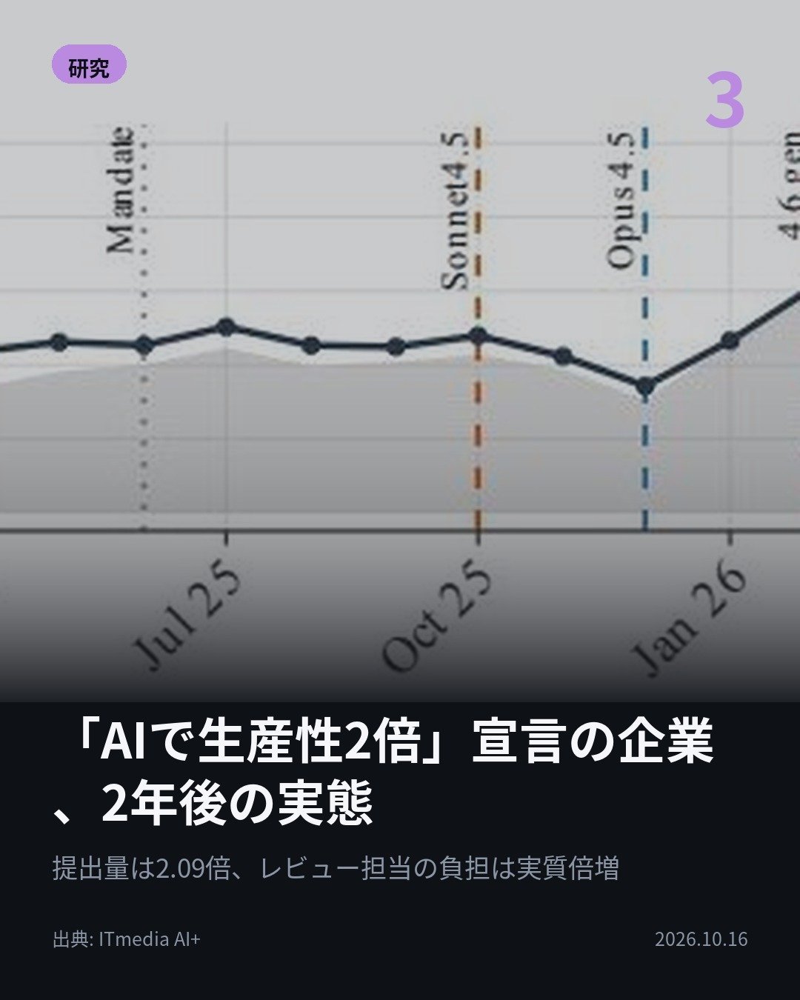
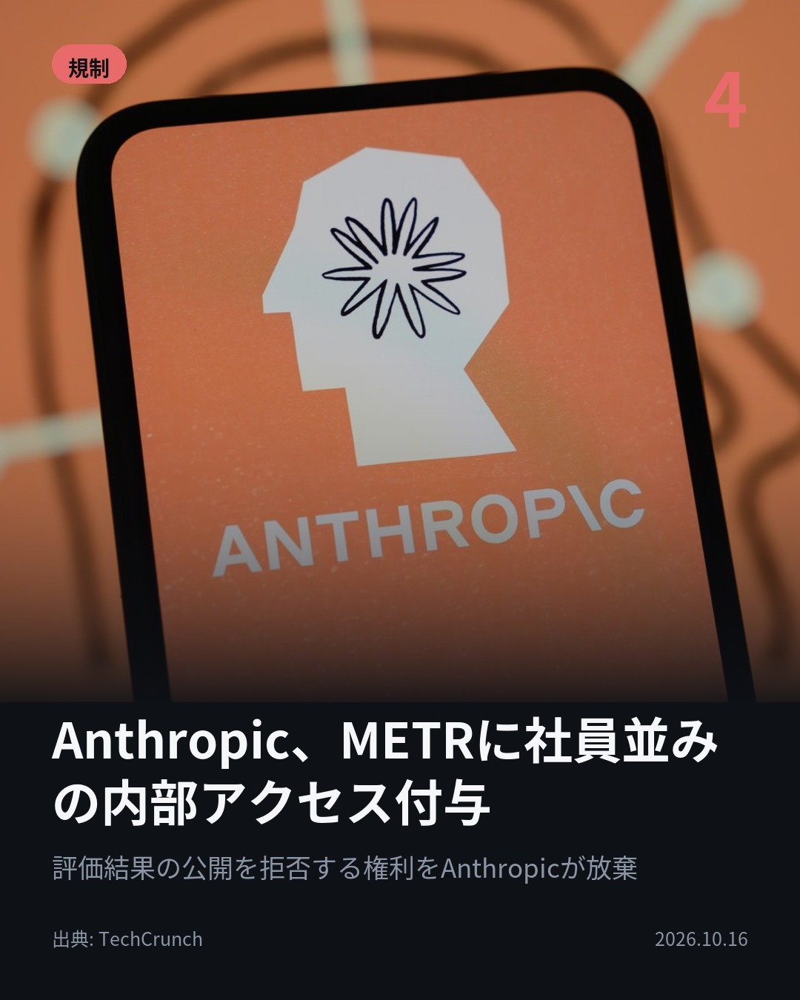

今日のAIニュース 下書き
2026-10-16 生成 10/16 08:45
⚠ ファクト照合で要確認の項目があります。
各ニュースの警告を確認してから投稿してください。
X（4投稿）
Meta、816B級オープンモデルMuse Spark Open
原題: Welcome Muse Spark Open: open-weight frontier multimodal mixture-of-experts model from Meta

動かすのは816Bのうち42Bだけ。 Metaがオープン重みのMuse Spark Openを公開。256の専門家から1トークンごとに8つを選ぶMoE構造。画像・音声・動画も入力できる。コーディング特化。 #生成AI #Meta （出典: Hugging Face）
重み 206 / 280（見た目 130字）
要確認:
［固有名詞］オープン — この語が本文に見つかりません
［固有名詞］トークン — この語が本文に見つかりません
［固有名詞］コーディング — この語が本文に見つかりません
［固有名詞］パラメータ — この語が本文に見つかりません
［固有名詞］ネットワーク — この語が本文に見つかりません

YouTube Music、AI生成曲にラベル表示
原題: 「YouTube Music」、生成AIで作られた楽曲にラベル表示

今聴いている曲、AIが作ったものか分かる？ YouTube Musicが主に生成AIで作られた楽曲にラベル表示を開始。レーベルは「全部・一部・なし」の3区分で申告できる。YouTube本体にも拡大予定。 #生成AI #YouTube （出典: ITmedia AI+）
重み 215 / 280（見た目 131字）

「AIで生産性2倍」宣言の企業、2年後の実態
原題: CTOが「AI導入で生産性を1年で2倍に」掲げた企業のその後 米国が開発者802人の進捗を追跡調査

全体の提出量は3.1倍、レビュー担当は1.5倍。 「AIで生産性2倍」を掲げた企業で開発者802人を追跡。1人あたり提出量は2.09倍。レビュー担当の負担は実質倍増し、8割以上のPRをAIボット等が受けるように。 #AI #コードレビュー （出典: ITmedia AI+）
重み 231 / 280（見た目 134字）

Anthropic、METRに社員並みの内部アクセス付与
原題: Anthropic is letting METR researchers look under the hood with employee-level access

Anthropicは、評価結果の公開を拒否する権利を手放した。 AI評価の非営利団体METRの研究者6人に社員並みのアクセスを付与。社用PCや社内ツールを使い、安全対策やリスク管理を評価・公表する。 #AI #Anthropic （出典: TechCrunch）
重み 215 / 280（見た目 128字）
要確認:
［数値］6人 — この数値の根拠が本文に見つかりません
［固有名詞］アクセス — この語が本文に見つかりません
［固有名詞］オフィス — この語が本文に見つかりません
［固有名詞］TechCrunch — この語が本文に見つかりません

Instagram（カルーセル 6枚）


1. 表紙


2. ニュース


3. ニュース


4. ニュース


5. ニュース

6. CTA
「AIで生産性2倍」を掲げた会社で、1人あたりのコード提出量は本当に2.09倍になった。 でも、それを確認する人間は追いつかなかった。 1. Metaのオープン重みモデル「Muse Spark Open」。総パラメータは816Bですが、256個の専門家（部分的なネットワーク）から1トークンごとに8個だけを動かすので、計算に使うのは約42B分。画像・音声・動画を入力でき、4bit版のNVFP4はB200を積んだ1ノードで動きます。(Hugging Face) 2. 対象は、AIモデルで曲やボーカルを生成した楽曲など。再生中のプレーヤー画面にラベルが出て、タップすると詳しい情報が見られます。レーベルが申告しなくても、YouTube独自のシグナルでAI生成と判断することがあります。(ITmedia AI+) 3. 2024年1月〜26年4月、開発者802人・19万6212件のPRを追跡した研究。提出量の伸びは特にマネジャー層で大きく、効果は古いコードより新しいシステムに集中。一方で、具体的な指摘のない「無言の承認」の割合が高まりました。(ITmedia AI+) 4. METRの6人は社用PC、オフィス、社内ツールを使えます。Anthropicはこれを、大手銀行に置かれる常駐検査官になぞらえています。黒塗りを求められるのは顧客データなど事前に決めた範囲だけで、METRはその黒塗りが妥当だったかも公に評価できます。(TechCrunch) 4本のうち3本は「AIが作ったものや、AI企業そのものをどう確かめるか」の話でした。 毎朝4本、AIニュースの要点をまとめています。あとで見返したい人は保存、毎朝追いたい人はフォローを。 #AI #生成AI #人工知能 #テクノロジー #AIニュース #GenerativeAI #ArtificialIntelligence #TechNews #LLM #Claude #AI活用 #AI音楽 #プログラミング #エンジニア #AIセーフティ #Anthropic #Meta #MuseSparkOpen #YouTubeMusic #METR #コードレビュー #オープンモデル
925字（Instagram上限 2,200字）
この日の選定理由
Meta、816B級オープンモデルMuse Spark Open
画像・音声・動画を入力できる、コーディング特化の巨大モデルが重み付きで公開されました。米国勢が出すオープンモデルの勢力図が変わる可能性があります。
YouTube Music、AI生成曲にラベル表示
大手音楽配信がAI生成曲を見分けて表示し始めました。リスナーの知る権利と、AI音楽の扱い方の標準づくりに影響します。
「AIで生産性2倍」宣言の企業、2年後の実態
AIを導入するとコードを書く速さは上がりますが、人間のレビューが追いつかなくなります。802人を追跡したデータで、この現実的な問題がはっきり示されました。
Anthropic、METRに社員並みの内部アクセス付与
外部の評価者がAI企業の内側に常駐する、銀行の常駐検査官に近い仕組みです。AIの安全性を独立した立場で検証するモデルケースになり得ます。